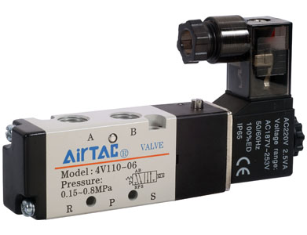
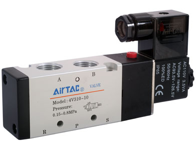
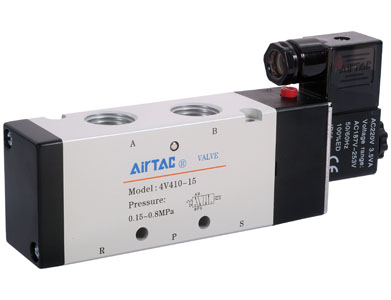
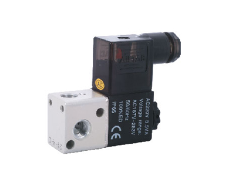
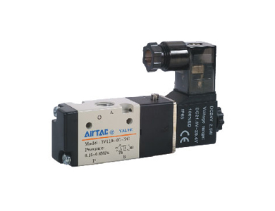

Bộ lọc, điều áp và xử lý khí AirTAC
FRL, filter, regulator, lubricator, pressure switch và cụm xử lý khí cho tủ khí nén.
Fast Group Engineering cung cấp sản phẩm AirTAC cho nhà máy, OEM và đội bảo trì: hỗ trợ tra mã, tư vấn cấu hình, báo giá theo RFQ và chứng từ theo yêu cầu từng đơn hàng.
Danh mục được sắp xếp theo nhóm kỹ thuật để đội mua hàng và kỹ thuật tìm nhanh sản phẩm cần báo giá.
FRL, filter, regulator, lubricator, pressure switch và cụm xử lý khí cho tủ khí nén.

Van 3/2, 5/2, 5/3, manifold, coil, van khí nén và van điều khiển lưu chất.

Xi lanh tiêu chuẩn, compact, guided cylinder, rotary table, air gripper và phụ kiện xi lanh.

One-touch fittings, speed controller, silencer, PU/PA tube, shock absorber và phụ kiện lắp đặt.

Linear guide, crossed roller way và cụm dẫn hướng chính xác cho cơ cấu tự động.
Cùng một mã AirTAC có thể khác điện áp coil, cổng ren, bore, stroke, kiểu gá hoặc phụ kiện. Fast Group kiểm tra các thông tin này trước khi báo giá để hạn chế nhầm mã.
Xác định số cổng và vị trí van, điện áp coil, lưu lượng, cỡ ren và kiểu manifold. Với van 5/2 hoặc 5/3 cần biết xi lanh điều khiển là tác động đơn hay kép.
Đọc bore, stroke, kiểu gá, cảm biến từ, ren cổng và tải làm việc. Nếu thay thế, hãy gửi ảnh tem xi lanh và kích thước lắp chính.
Chọn theo lưu lượng, áp làm việc, cấp lọc, đường kính ống và chuẩn ren PT/NPT. Speed controller cần đúng hướng lắp để chỉnh tốc độ xi lanh ổn định.
Các bài guide giúp đội mua hàng và kỹ thuật chuẩn bị đủ thông tin trước khi gửi RFQ hoặc thay thế thiết bị trên máy.
Xác định số cổng, số vị trí, điện áp coil, cỡ ren, lưu lượng và kiểu manifold trước khi chốt mã.
Chọn xi lanh theo bore, stroke, kiểu gá, cảm biến từ, tải, tốc độ và không gian lắp.
Chọn FRL theo lưu lượng, cỡ cổng, dải áp, cấp lọc, kiểu xả nước và môi trường khí nén.
Đối chiếu đường kính ống, chuẩn ren, hình dạng đầu nối, vật liệu và hướng chỉnh lưu lượng.
Chọn thanh trượt theo tải, moment, chiều dài ray, độ chính xác, preload và điều kiện bôi trơn.
Các dòng thường gặp trong máy đóng gói, tủ khí nén, dây chuyền tự động và cụm kẹp/gắp.

4V/5V-van manifold: thông tin kỹ thuật, datasheet và cấu hình cần kiểm tra trước khi chọn van/coil/manifold.

4V100 Series van điện từ (5/2 way, 5/3 way): thông tin kỹ thuật, datasheet và cấu hình cần kiểm tra trước khi chọn van/coil/manifold.

4V200 Series van điện từ (5/2 way, 5/3 way): thông tin kỹ thuật, datasheet và cấu hình cần kiểm tra trước khi chọn van/coil/manifold.

4V300 Series van

4V400 Series van điện từ (5/2 way, 5/3 way): thông tin kỹ thuật, datasheet và cấu hình cần kiểm tra trước khi chọn van/coil/manifold.

3V-van manifold: thông tin kỹ thuật, datasheet và cấu hình cần kiểm tra trước khi chọn van/coil/manifold.

3V1 Series van

3V100 Series van
Chúng tôi hỗ trợ khách hàng chọn đúng mã AirTAC, báo giá theo số lượng, chuẩn bị chứng từ phù hợp và giao hàng theo yêu cầu của từng nhà máy.
Fast Group Engineering cung cấp van điện từ, xi lanh khí nén, cụm xử lý khí FRL, fitting, ống khí, phụ kiện và linear guide AirTAC cho nhà máy, OEM và đội bảo trì.
Có. Tùy điều kiện từng đơn hàng, Fast Group hỗ trợ hóa đơn VAT, CO/CQ, packing list hoặc chứng từ nhập khẩu khi khách hàng yêu cầu trước khi đặt.
Hãy gửi mã hàng đầy đủ, số lượng, ảnh tem nếu thay thế, điện áp coil đối với van điện từ, bore/stroke đối với xi lanh, và yêu cầu chứng từ/giao hàng nếu có.
Có. Với mã cũ, ảnh tem hoặc BOM máy, Fast Group sẽ kiểm tra cấu hình cần thiết trước khi phản hồi báo giá hoặc đề xuất cách đối chiếu phù hợp.